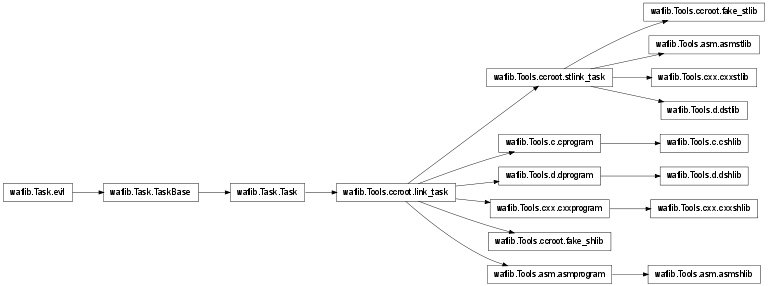

asm¶
Assembly support, used by tools such as gas and nasm
To declare targets using assembly:
def configure(conf):
conf.load('gcc gas')
def build(bld):
bld(
features='c cstlib asm',
source = 'test.S',
target = 'asmtest')
bld(
features='asm asmprogram',
source = 'test.S',
target = 'asmtest')
Support for pure asm programs and libraries should also work:
def configure(conf):
conf.load('nasm')
conf.find_program('ld', 'ASLINK')
def build(bld):
bld(
features='asm asmprogram',
source = 'test.S',
target = 'asmtest')
- class waflib.Tools.asm.asm(*k, **kw)[source]¶
Bases: waflib.Task.Task
Compile asm files by gas/nasm/yasm/...
- waflib.Tools.asm.asm_hook(self, node)[source]¶
Bind the asm extension to the asm task
Parameters: - node (waflib.Node.Node) – input file
- class waflib.Tools.asm.asmprogram(*k, **kw)[source]¶
Bases: waflib.Tools.ccroot.link_task
Link object files into a c program
- class waflib.Tools.asm.asmshlib(*k, **kw)[source]¶
Bases: waflib.Tools.asm.asmprogram
Link object files into a c shared library
- class waflib.Tools.asm.asmstlib(*k, **kw)[source]¶
Bases: waflib.Tools.ccroot.stlink_task
Link object files into a c static library
- waflib.Tools.asm.extension(*k)¶
Decorator: register a task generator method which will be invoked during the processing of source files for the extension given:
from waflib import Task class mytask(Task): run_str = 'cp ${SRC} ${TGT}' @extension('.moo') def create_maa_file(self, node): self.create_task('mytask', node, node.change_ext('.maa')) def build(bld): bld(source='foo.moo')
- waflib.Tools.asm.feature(*k)¶
Decorator: register a task generator method that will be executed when the object attribute ‘feature’ contains the corresponding key(s):
from waflib.Task import feature @feature('myfeature') def myfunction(self): print('that is my feature!') def build(bld): bld(features='myfeature')
Parameters: - k (list of string) – feature names
- class waflib.Tools.asm.stlink_task(*k, **kw)¶
Bases: waflib.Tools.ccroot.link_task
Base for static link tasks, which use ar most of the time. The target is always removed before being written.
- class waflib.Tools.asm.link_task(*k, **kw)¶
Bases: waflib.Task.Task
Base class for all link tasks. A task generator is supposed to have at most one link task bound in the attribute link_task. See waflib.Tools.ccroot.apply_link().

- add_target(target)¶
Process the target attribute to add the platform-specific prefix/suffix such as .so or .exe. The settings are retrieved from env.clsname_PATTERN